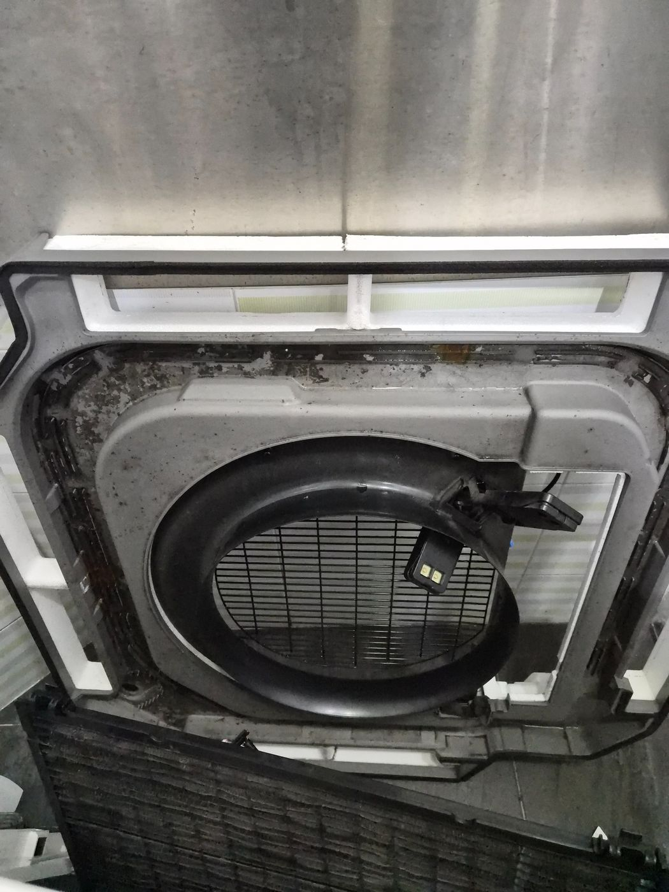
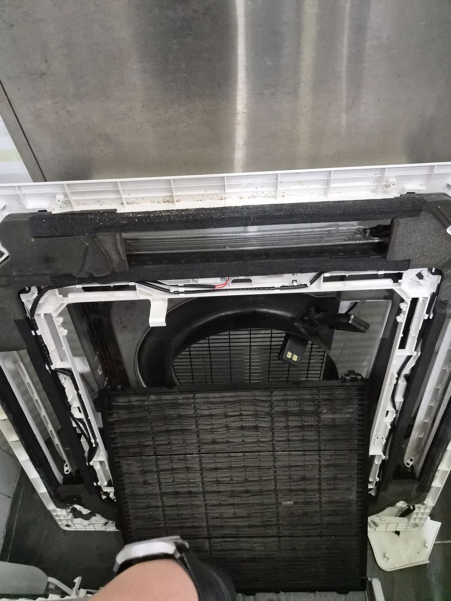
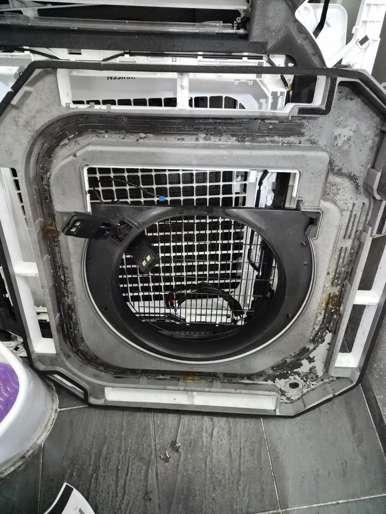
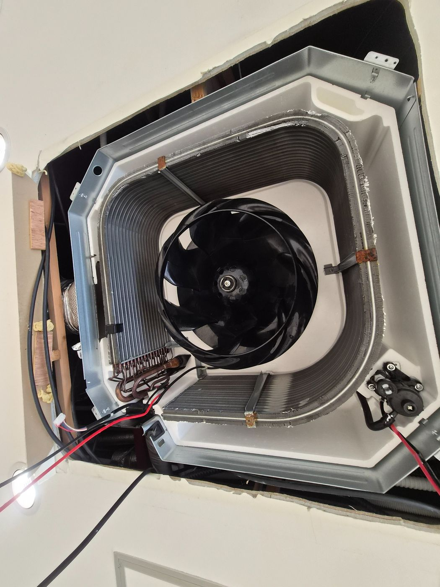
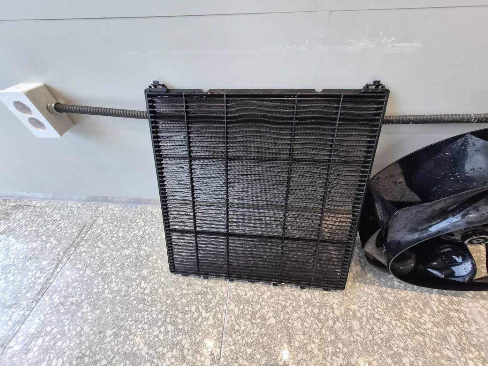
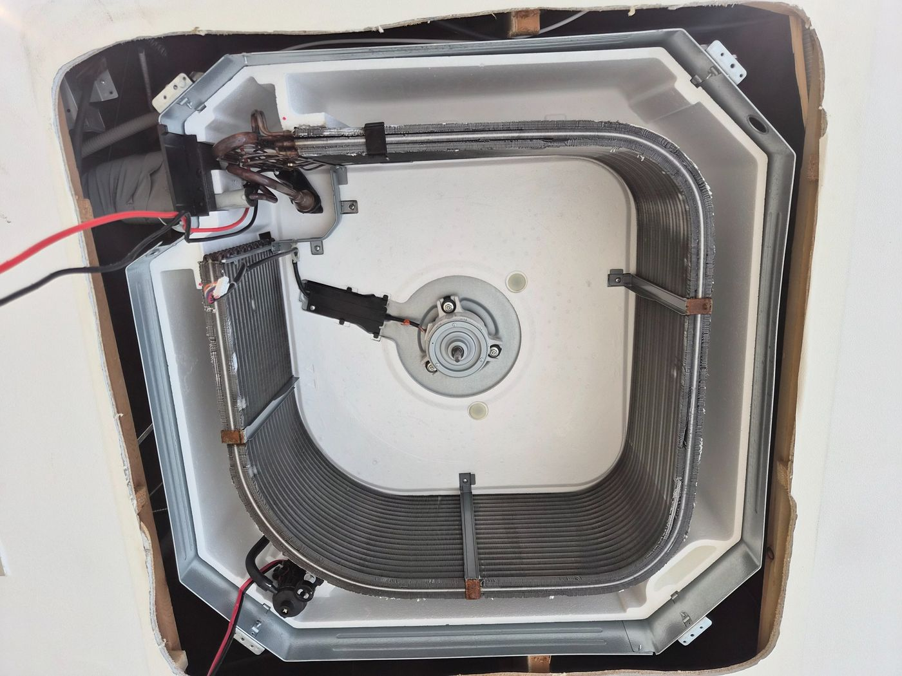
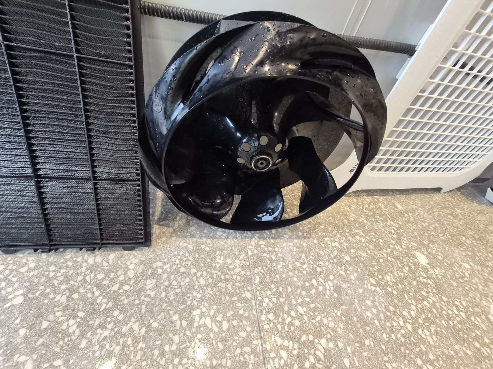
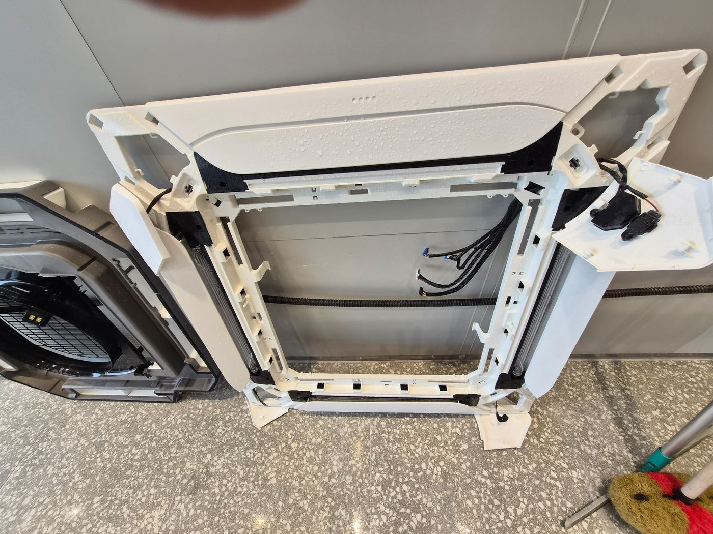
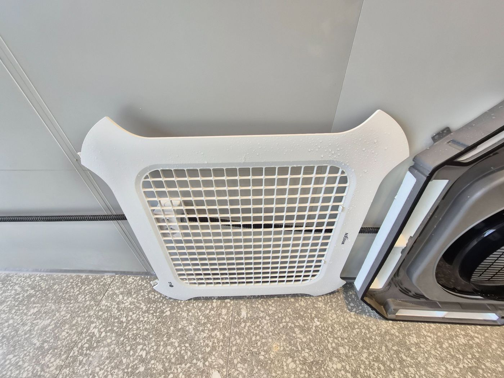

김해 상가 시스템에어컨 4way 분해청소
천장형 시스템에어컨은 겉면만 닦아서는 내부 송풍팬, 필터, 드레인팬과 열교환기 주변의 오염 상태를 확인하기 어렵습니다. 이번 사진은 사업장용 4way 시스템에어컨을 분해하면서 내부 상태를 확인한 실제 작업과정입니다.
퍼펙트케어는 기종과 구조에 맞춰 필요한 부품을 분해한 뒤 세척하고 충분히 건조 후 조립·작동 확인까지 진행합니다.

분해하면 보이는 내부 오염



분해 부품은 따로 세척하고 건조합니다
필터, 패널, 송풍팬과 분해 가능한 부품은 본체에서 분리해 세척합니다. 오염을 씻어낸 뒤 물기가 남지 않도록 건조하고, 조립 후 작동 상태를 확인합니다.
에어컨청소는 스팀이나 항균코팅을 추가하는 방식이 아니라, 실제 오염이 쌓이는 부품과 열교환기 주변을 구조에 맞게 분해·세척하는 과정을 중요하게 봅니다.

시스템에어컨 분해청소 실제 사진



조립 전 부품 상태를 다시 확인합니다
세척이 끝난 부품은 파손이나 이물 잔류가 없는지 확인한 뒤 원래 순서대로 조립합니다. 마지막에는 작동 여부와 냉방, 풍량, 이상 소음 등을 확인합니다.
대수와 기종이 많은 사무실·공장·상가의 경우 현장 방문 시 전체 수량과 설치 높이, 작업동선을 함께 확인해 일정과 견적을 안내합니다. 대량건도 문제없습니다.

김해 에어컨 분해청소 상담 가능 기종
벽걸이, 스탠드, 2in1, 시스템 1way·4way 등 기종별 구조와 오염도에 맞춰 상담합니다. 정확한 견적은 대수, 기종, 설치환경과 작업동선을 현장에서 확인한 뒤 무료 방문견적으로 안내합니다.
김해 에어컨 분해청소 무료 방문견적
기종과 대수, 설치환경을 확인한 뒤 정확한 견적과 작업일정을 안내드립니다.